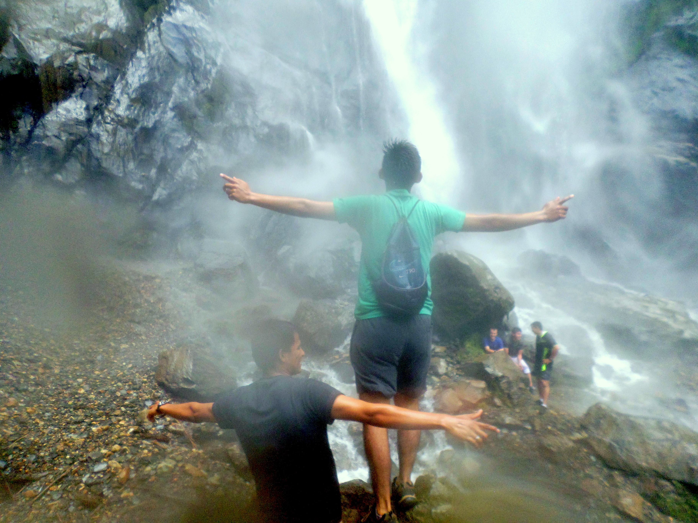

On 2017 I leave my home in Tarija-Bolivia traveling to Peru-Lima to the MTC(Missionary Training Center), I was part of the Enos District 104 with other missionaries that I refer below from left to right up to down: Elder Troncos from Antofagasta-Chile Elder Iman from Tumbes-Peru Elder Espinoza from Lima-Peru Me (Elder Soruco) from Tupiza-Bolivia Elder Porroa from Lima-Peru Elder Jimenez from Lima-Peru Elder Saenz from La Paz-Bolivia Elder Saad from Santiago del Estero-Argentina Sister Soldevilla from Lima-Peru Sister Moore (MTC President Wife) President More (MTC President) Sister Lezano from Lima-Peru.
I arrived to Peru on May-02-2017 my birthday, it was one of the best birthday's gifts I got. My Mission President and his wife were President and Sister Herrera from Tacna-Peru, I can describe how many things I learned form and with them.
I was assigned to serve on Puno-Peru, My trainer was Elder Galvis from Manizales- Colombia, It was a very good time to learn to talk to everyone and work really hard with the Holy gosth, does first experiences helped me to trust on God's will, and to be happy.


I had been on 6 different cities and with 12 different companions, one of my favorites was Quillabamba, I loved that place, because the preparation and desire to recieve the gospel in their lives. The weather and its panoram was awesome too.
I know that God wants us to give our very best while doing anything we are doing, but most when we are doing his will. He calls us and he prepares us to do his will we only need to have a willingness heart and mind. One step at a time.